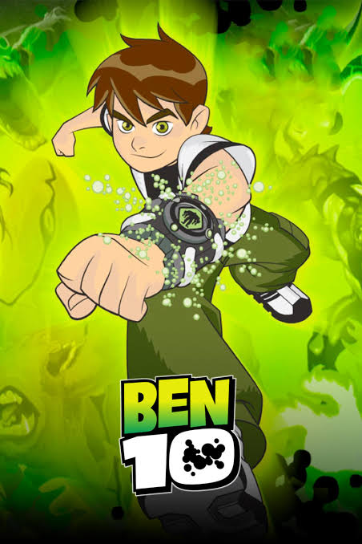
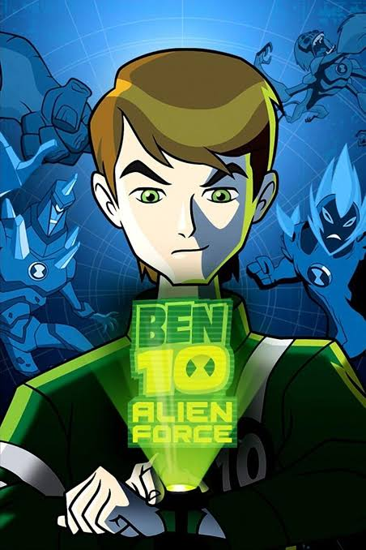
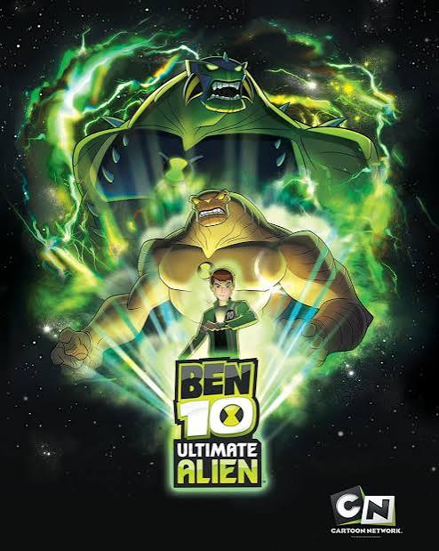
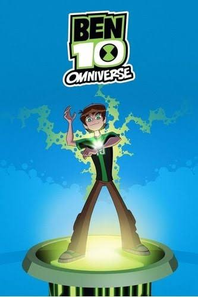

Ben 10 (2005-2008)

Primeiro Ben 10 lançado, começando a jornada de Ben com o Omnitrix. Começando com 10 aliens, com o Ben desbloqueando mais ao decorrer da série, totalizando 21 aliens
Ben 10 Força Alienígena (2008-2010)
Ben 10 Supremacia Alienígena (2010-2012)
Ben 10 Omniverse (2012-2014)
O começo
Era UAF (Ultimate Alien Force)

Ben já com 15 anos que depois de ter abandonado o Omnitrix aos 11 anos (por perder seu alien favorito, Feedback) decide voltar a ser herói, obtendo o Omnitrix Recalibrado, uma versão aprimorada com novos aliens.

Continuação direta de Força Alienígena, começando após Ben derrotar Vilgax e pegar o Ultimatrix, uma cópia do Omnitrix criada por Albedo, com a adição da fução evolutiva, que força o DNA do alien atual a evoluir e ficar mais forte.
Expansão do universo

Foca na expansão da lore e do universo de Ben 10, mostrando Ben com o Omnitrix Definitivo e seu mais novo parceiro Rook Blook. Introduzindo bens de outros univeros, como Ben 23 da dimensão 23 e Mad Ben.
Comece à assistir agora
HBO Max possui toda a série completa.